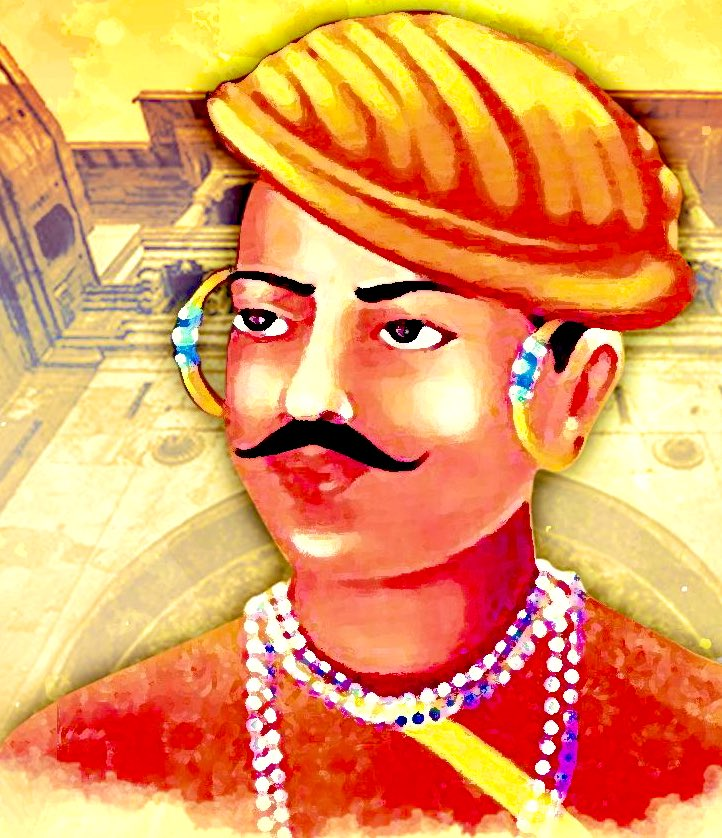

Nana Sahib was a significant contributor in 1857 uprising in which he led a group of ardent rebellions. overwhelmed the British forces in Kanpur and threatened British camp by killing the survivors of the force.
Audacious and fearless, Nana Sahib was a skilled administrator as well who prepared and ledthousands of Indian soldiers.
Privacy PolicyCopyright © 2023, Adit Pvt Ltd. All Rights Reserved | by NSTI V